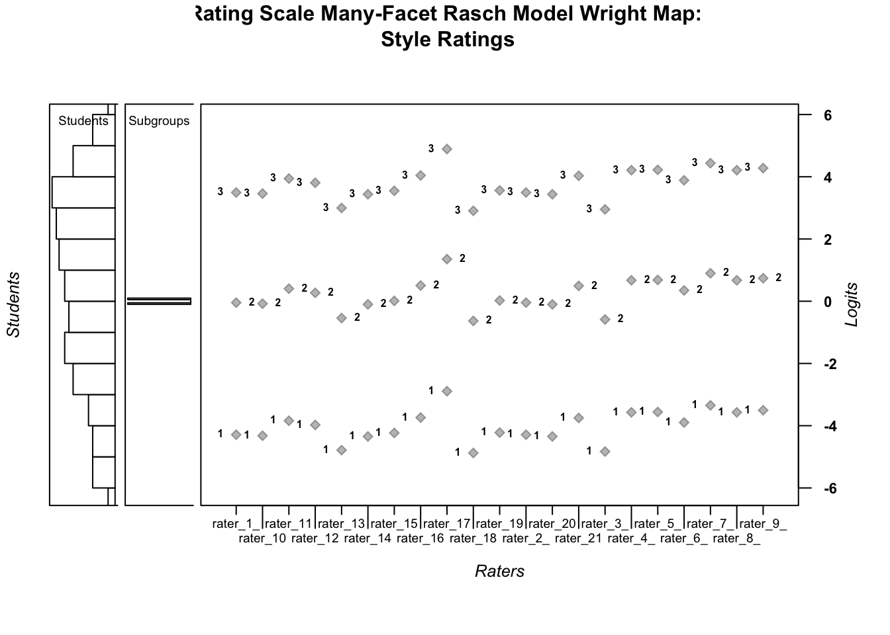

Chapter 10 Example results section based on Example 1:
| Statistic | Students | Subgroups | Raters |
|---|---|---|---|
| Logit Scale Location Mean | 0.47 | 0.00 | 0.00 |
| Logit Scale Location SD | 3.17 | 0.09 | 0.52 |
| Standard Error Mean | 0.47 | 0.02 | 0.09 |
| Standard Error SD | 0.12 | 0.00 | 0.06 |
| Outfit MSE Mean | 0.89 | 0.95 | 0.95 |
| Outfit MSE SD | 0.35 | 0.19 | 0.19 |
| Infit MSE Mean | 0.90 | 0.96 | 0.96 |
| Infit MSE SD | 0.35 | 0.17 | 0.17 |
| Std. Outfit Mean | -0.32 | -0.55 | -0.55 |
| Std. Outfit SD | 1.13 | 1.82 | 1.82 |
| Std. Infit Mean | -0.30 | -0.50 | -0.50 |
| Std. Infit SD | 1.12 | 1.85 | 1.85 |
Table 1 presents a summary of the results from the analysis of the style ratings using a Rating Scale model formulation (Andrich, 1978) of the Many-Facet Rasch model (Linacre, 1989).
Specifically, Table 1 summarizes the calibration of the students (N = 372), subgroups (N = 2), and raters (N = 21) using average logit-scale calibrations, standard errors, and model-data fit statistics. Student locations represent students’ estimated achievement level related to the style of their writing. Higher locations indicate higher achievement. The subgroup facet locations reflect the location of the student language subgroups on the logit scale. Finally, rater locations reflect the severity level of raters when scoring student performances; higher locations indicate more-severe raters. On average, the students were located higher on the logit scale (M = 0.47,SD = 3.16), compared to raters (M = 0.00, SD = 0.52), whose locations were centered at zero logits. The average value of the Standard Error (SE) was larger and more variable for students (M = 0.47, SD = 0.12) compared to raters (M = 0.09, SD = 0.06). The average values of model-data fit statistics were slightly lower than the expected value of 1.00 for all three facets, indicating that there was slightly less variation in the ratings than expected by the probabilistic model. Additional investigation into item fit and person fit is warranted.
| Rater ID | Average Rating | Rater Location | Threshold 1 | Threshold 2 | Threshold 3 | Outfit_MSE_Group1 | Outfit_MSE_Group2 | Infit_MSE_Group1 | Infit_MSE_Group2 | Std.Outfit_MSE_Group1 | Std.Outfit_MSE_Group2 | Std.Infit_MSE_Group1 | Std.Infit_MSE_Group2 | |
|---|---|---|---|---|---|---|---|---|---|---|---|---|---|---|
| rater_9 | 9 | 1.35 | 1.12 | -2.89 | 1.35 | 4.89 | 0.68 | 0.89 | 0.69 | 0.87 | -3.04 | -1.04 | -3.22 | -1.30 |
| rater_19 | 19 | 1.45 | 0.66 | -3.35 | 0.90 | 4.44 | 1.24 | 1.09 | 1.15 | 1.12 | 1.96 | 0.87 | 1.39 | 1.18 |
| rater_21 | 21 | 1.49 | 0.50 | -3.50 | 0.74 | 4.28 | 0.97 | 0.79 | 1.03 | 0.85 | -0.20 | -1.86 | 0.32 | -1.50 |
| rater_17 | 17 | 1.51 | 0.45 | -3.56 | 0.68 | 4.22 | 1.14 | 1.19 | 1.16 | 1.17 | 1.14 | 1.63 | 1.48 | 1.65 |
| rater_16 | 16 | 1.51 | 0.44 | -3.57 | 0.67 | 4.21 | 0.77 | 0.84 | 0.78 | 0.84 | -2.14 | -1.59 | -2.21 | -1.75 |
| rater_20 | 20 | 1.51 | 0.44 | -3.57 | 0.67 | 4.21 | 1.01 | 0.82 | 1.04 | 0.85 | 0.11 | -1.79 | 0.39 | -1.56 |
| rater_8 | 8 | 1.55 | 0.27 | -3.74 | 0.50 | 4.04 | 0.75 | 1.00 | 0.78 | 0.98 | -2.34 | 0.03 | -2.19 | -0.14 |
| rater_14 | 14 | 1.55 | 0.26 | -3.75 | 0.49 | 4.03 | 1.20 | 1.24 | 1.19 | 1.27 | 1.62 | 2.10 | 1.68 | 2.53 |
| rater_3 | 3 | 1.57 | 0.17 | -3.84 | 0.40 | 3.94 | 0.71 | 0.97 | 0.75 | 1.00 | -2.82 | -0.27 | -2.64 | 0.03 |
| rater_18 | 18 | 1.59 | 0.11 | -3.90 | 0.35 | 3.89 | 1.05 | 1.02 | 1.05 | 1.05 | 0.44 | 0.24 | 0.48 | 0.53 |
| rater_4 | 4 | 1.60 | 0.03 | -3.98 | 0.27 | 3.81 | 0.81 | 0.86 | 0.83 | 0.86 | -1.75 | -1.39 | -1.65 | -1.48 |
| rater_11 | 11 | 1.66 | -0.21 | -4.22 | 0.02 | 3.56 | 1.00 | 1.10 | 1.01 | 1.13 | 0.01 | 0.88 | 0.12 | 1.32 |
| rater_7 | 7 | 1.67 | -0.22 | -4.23 | 0.01 | 3.55 | 1.10 | 1.16 | 1.07 | 1.07 | 0.79 | 1.41 | 0.70 | 0.77 |
| rater_1 | 1 | 1.68 | -0.28 | -4.29 | -0.04 | 3.49 | 0.54 | 0.52 | 0.57 | 0.55 | -4.84 | -5.66 | -4.91 | -5.55 |
| rater_12 | 12 | 1.68 | -0.28 | -4.29 | -0.04 | 3.49 | 0.77 | 0.84 | 0.78 | 0.83 | -2.14 | -1.59 | -2.21 | -1.79 |
| rater_2 | 2 | 1.69 | -0.31 | -4.32 | -0.08 | 3.46 | 0.99 | 1.16 | 1.01 | 1.19 | 0.00 | 1.42 | 0.14 | 1.87 |
| rater_6 | 6 | 1.69 | -0.34 | -4.35 | -0.10 | 3.44 | 0.95 | 1.06 | 0.96 | 1.06 | -0.45 | 0.61 | -0.34 | 0.61 |
| rater_13 | 13 | 1.69 | -0.34 | -4.35 | -0.10 | 3.44 | 0.87 | 0.96 | 0.88 | 0.95 | -1.13 | -0.31 | -1.10 | -0.46 |
| rater_5 | 5 | 1.80 | -0.78 | -4.79 | -0.54 | 3.00 | 0.63 | 0.99 | 0.66 | 1.00 | -3.64 | -0.07 | -3.70 | 0.00 |
| rater_15 | 15 | 1.81 | -0.82 | -4.83 | -0.59 | 2.95 | 0.84 | 1.00 | 0.85 | 0.98 | -1.44 | 0.05 | -1.44 | -0.15 |
| rater_10 | 10 | 1.82 | -0.87 | -4.88 | -0.63 | 2.91 | 1.09 | 1.24 | 1.10 | 1.20 | 0.82 | 2.17 | 0.95 | 1.98 |
Table 2 includes detailed results for the 21 raters included in the analysis, where raters are ordered by their overall logit-scale location (i.e., rater severity) from high (severe) to low (lenient). For each rater, the average rating is presented, followed by the overall logit-scale location (\(\lambda\)), the location of the rater-specific rating scale category thresholds, and fit statistics specific to the two student subgroups. Because we used a RS formulation of the MFRM, the distance between adjacent rating scale category threshold estimates is the same for all of the raters. Rater 9 was the most severe rater (Average Rating = 1.35; \(\lambda\) = 1.12), and Rater 10 was the most lenient rater (Average Rating = 1.82; \(\lambda\) = -0.87). In general, the raters exhibited similar model-data fit patterns within subgroups.
# Print Table 3:
knitr::kable(
head(RS_MFRM_Table3,10), booktabs = TRUE,
caption = 'Student Calibration'
)| Student ID | Average Rating | Student Location | Student SE | Outfit MSE | Std. Outfit | Infit MSE | Std. Infit | |
|---|---|---|---|---|---|---|---|---|
| 69 | 69 | 3.00 | 7.60 | 1.47 | 0.02 | -0.81 | 0.03 | -1.02 |
| 44 | 44 | 2.95 | 6.57 | 0.87 | 0.54 | -0.36 | 0.71 | -0.18 |
| 45 | 45 | 2.95 | 6.57 | 0.87 | 0.44 | -0.54 | 0.68 | -0.23 |
| 12 | 12 | 2.95 | 6.44 | 0.87 | 0.54 | -0.36 | 0.71 | -0.18 |
| 70 | 70 | 2.95 | 6.44 | 0.87 | 0.76 | -0.01 | 0.79 | -0.06 |
| 269 | 269 | 2.95 | 6.44 | 0.87 | 0.54 | -0.36 | 0.71 | -0.18 |
| 77 | 77 | 2.90 | 5.87 | 0.69 | 0.58 | -0.58 | 0.75 | -0.33 |
| 282 | 282 | 2.86 | 5.61 | 0.60 | 0.83 | -0.20 | 0.93 | -0.03 |
| 362 | 362 | 2.86 | 5.61 | 0.60 | 1.03 | 0.22 | 0.85 | -0.24 |
| 65 | 65 | 2.86 | 5.48 | 0.60 | 1.13 | 0.41 | 0.95 | 0.02 |
Table 3 includes detailed results for the students who participated in the style writing assessment. For each student, the average rating is presented, followed by their logit-scale location estimate (\(\theta\)), SE, and model-data fit statistics. Students are ordered by their location on the logit scale, from high (high estimated achievement) to low (low estimated achievement). For brevity, Table 3 only shows results for 10 students.
| Subgroup | Average Rating | Subgroup Location | Subgroup Location SE | Outfit MSE | Std. Outfit | Infit MSE | Std. Infit | |
|---|---|---|---|---|---|---|---|---|
| 2 | language2 | 1.59 | 0.07 | 0.02 | 0.93 | -0.24 | 0.94 | -0.21 |
| 1 | language1 | 1.63 | -0.07 | 0.02 | 0.85 | -0.41 | 0.86 | -0.41 |
Table 4 shows the calibration of the student subgroup facet. For each subgroup, the average rating among students within the subgroup is presented, followed by the logit-scale location estimate for the subgroup (\(\gamma\)), SE, and model-data fit statistics. Subgroups are ordered by their location on the logit scale, from high (high estimated achievement) to low (low estimated achievement). In this assessment, the difference in logit-scale locations between the two language subgroups was small–indicating comparable estimated achievement levels, on average, for students in each language group. In addition, the fit statistics were comparable between subgroups.
# Plot the Wright Map
wrightMap(thetas = cbind(student.locations_RSMFR$theta, subgroup.estimates$xsi),
axis.persons = "Students",
dim.names = c("Students", "Subgroups"),
thresholds = rater_thresholds,
show.thr.lab = TRUE,
label.items.rows= 2,
label.items = rater.estimates$parameter,
axis.items = "Raters",
main.title = "Rating Scale Many-Facet Rasch Model Wright Map:\n Style Ratings",
cex.main = .6)
## [,1] [,2] [,3]
## [1,] -4.288967 -0.04481525 3.493253
## [2,] -4.322646 -0.07849438 3.459574
## [3,] -3.840553 0.40359889 3.941667
## [4,] -3.975059 0.26909229 3.807160
## [5,] -4.785429 -0.54127709 2.996791
## [6,] -4.345107 -0.10095584 3.437112
## [7,] -4.232865 0.01128652 3.549355
## [8,] -3.739598 0.50455410 4.042622
## [9,] -2.891467 1.35268451 4.890753
## [10,] -4.876566 -0.63241444 2.905654
## [11,] -4.221649 0.02250299 3.560571
## [12,] -4.288967 -0.04481525 3.493253
## [13,] -4.345107 -0.10095584 3.437112
## [14,] -3.750819 0.49333235 4.031400
## [15,] -4.830952 -0.58680019 2.951268
## [16,] -3.571092 0.67305934 4.211127
## [17,] -3.559845 0.68430692 4.222375
## [18,] -3.896607 0.34754470 3.885613
## [19,] -3.345721 0.89843079 4.436499
## [20,] -3.571092 0.67305934 4.211127
## [21,] -3.504491 0.73966026 4.277728Figure 1 is a Wright Map that illustrates the results from the RS-MFRM analysis of the style ratings. Units on the logit scale are shown on the far-right axis of the plot (labeled Logits). The left-most panel of the plot shows a histogram of student locations on the logit scale that represents the latent variable. The second panel from the left shows the distribution of subgroups on the logit scale. There are only two subgroups in our analysis.
The large central panel of the plot shows the rating scale category threshold estimates specific to each rater on the logit scale that represents the latent variable. Light grey diamond shapes show the logit scale location of the threshold estimates for each rater, as labeled on the x-axis. Thresholds are labeled using tau symbols followed by an integer that shows the threshold number. In our example, $$1 is the threshold between rating scale categories x = 0 and x = 1, $$2 is the threshold between rating scale categories x = 1 and x = 2, and $$3 is the threshold between rating scale categories x = 2 and x = 3. Because we used a RS model formulation, the distance between adjacent thresholds is the same for all of the raters in the analysis.
The Wright Map suggests that, on average, the students are located higher on the logit scale compared to the average rater threshold locations. In addition, there appears to be a relatively wide spread of student and rater locations on the logit scale, such that the style writing assessment appears to be a useful tool for identifying differences in students’ writing achievement related to style as well as differences in rater severity. The subgroup locations are close together, suggesting that there is not much difference in the logit-scale locations between students in either language subgroup.
10.1 Exercise
Please use the TAM package to estimate item, threshold, and person locations with the RS-MFRM for the Exercise 6 data. The Exercise 6 data include responses from 350 participants from two subgroups (group 1 and group 2) to a survey with 30 items. Participants used a four-category rating scale (x = 0, 1, 2, 3) to respond to each item. The MFRM can be specified using various formulations, including a RS-MFRM and a PC-MFRM. After completing the analysis, try writing a results section similar to the example in this chapter based on your findings.